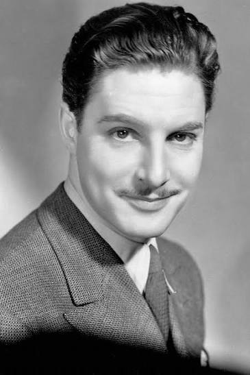

| Oscar Nominations | ||||
|---|---|---|---|---|
| Ceremony | Film | Category | Role | Result |
| 12th Academy Awards Oscars 1940 |
Goodbye, Mr. Chips | Actor | "Mr. Chips" | Won |
| 11th Academy Awards Oscars 1939 |
The Citadel | Actor | "Andrew Mason" | Nominated |

Robert Donat